Key Takeaways
- Supports modern authentication instead of the traditional windows credential provider.
- Enables web-based sign in for supported Microsoft Entra joined windows devices.
- Improve compatibility with password less and federated authentication methods.
- Useful for organizations that rely on Microsoft Entra ID and cloud-based authentication for secure device access.
Hey, let’s learn about Configure Web Sign-In for Primary Users to Support Cloud-Based Authentication using Microsoft Intune. This policy is a cornerstone for organizations adopting cloud-based identity and password less authentication. It modernizes Windows sign-in by integrating Entra ID and federated identity providers but requires careful planning around connectivity and device management.
Table of Contents
What are the Advantages of this Policy?
The main advantage of the Enable Web Sign-In for Primary User policy is that it modernizes Windows authentication by allowing password less, cloud-based sign-in methods.
1. Password less authentication eliminates reliance on passwords, reducing phishing and credential theft risks.
2. Policy reduces password fatigue; Users don’t need to remember or reset complex passwords.
3. Enables secure, time-limited sign-in for onboarding or recovery.
4. Perfect for organizations moving toward cloud-based identity management.
Configure Web Sign-In for Primary Users to Support Cloud-Based Authentication using Microsoft Intune
The Enable Web Sign-In for Primary User policy is a Windows authentication setting that allows users to sign in using a web-based flow instead of traditional credentials. It’s designed to support password less authentication and modern identity scenarios with Microsoft Entra ID. The policy modernizes Windows sign-in by shifting from local credential entry to a secure, cloud-based authentication flow.
How To Create the Enable Web Sign-In for Primary User Policy
To create the Enable Web Sign-In for Primary User policy, you must have to sign-in Microsoft Intune admin center. Then click devices on the left side of the screen, select configuration then click on create and select new policy for creating a policy.
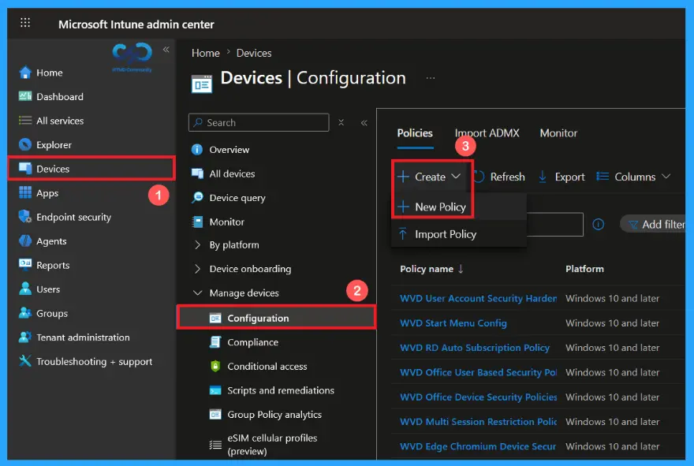
Create a Profile of Enable Web Sign-In for Primary User Policy
After clecking on New Policy, a profile creation window will open. Now select Windows 10 and later as the platform, then choose settings catalog as the profile type. Once these options are configured, click Create to continue.

Configure the Enable Web Sign-In for Primary User Policy Basics
The Basics page is used to define the policy’s identity by providing a unique name and an optional description. Here, I gave a proper name as Enable Web Sign-In for Primary User for the policy and description as Specifies whether web-based sign-in is enabled with the Primary User experience. Then click on next to continue
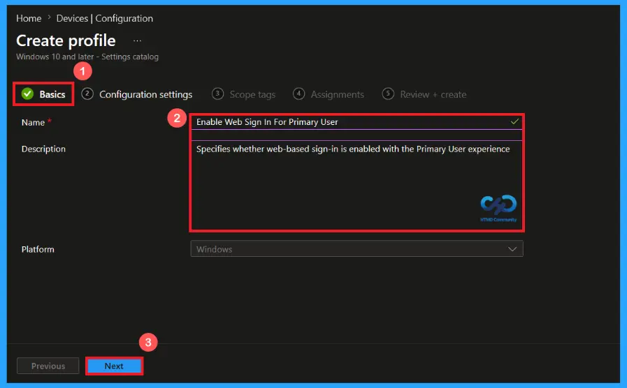
Configuration settings of Enable Web Sign-In for Primary User Policy
In this configuration settings, you can easily add a policy by clicking on +Add settings. Then a Settings Picker will open on the right side of the screen. Here, I selected Federated Authentication and selected the Enable Web Sign-In for Primary User Policy.
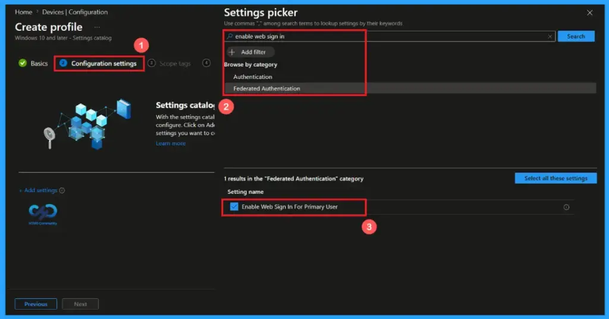
Default Option of Enable Web Sign-In for Primary User Policy
“Feature defaults as appropriate for edition and device capabilities” is the default option of Enable Web Sign-in for primary user policy. This setting allows administrators to rely on windows built-in behaviour instead of forcing the feature on or off. It provides the best compatibility across different windows devices.
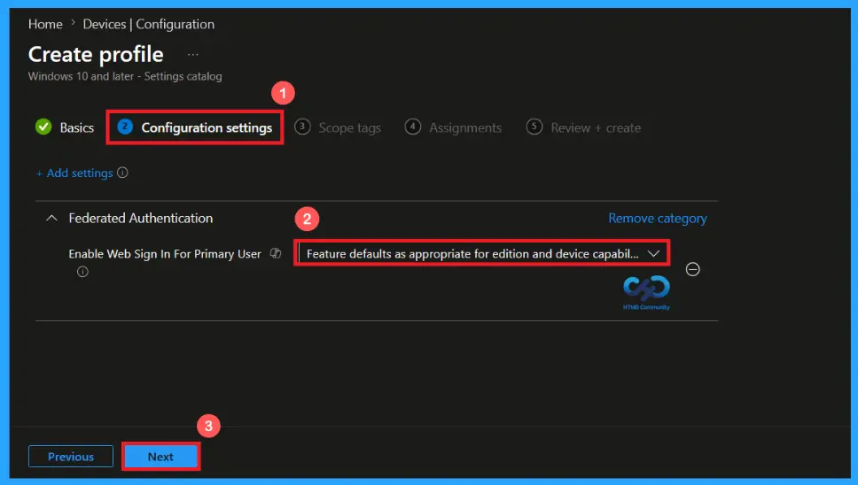
Enable or disable the Web Sign in Feature
Click on the drop-down arrow on the default option to enable or disable the web sign-in feature. If force web sign-in to be enabled on supported devices; users can authenticate through a web-based sign-in page instead of only using local windows credential. If disabled this feature, users cannot use web-based authentication to sign-in. Then click next to continue.
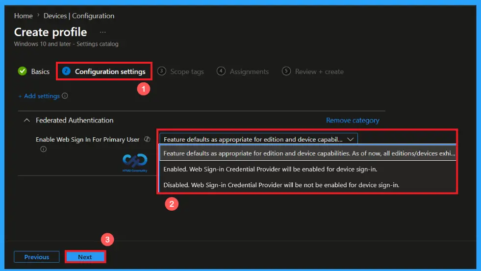
Scope Tag Settings
A scope tag in Intune helps to organize and manage Intune resources based on administrative roles. Adding a scope tag is not mandatory. If needed, select the appropriate scope tag by clicking the select scope tags button. Here I selected the London scope tag. Then Click Next to continue.
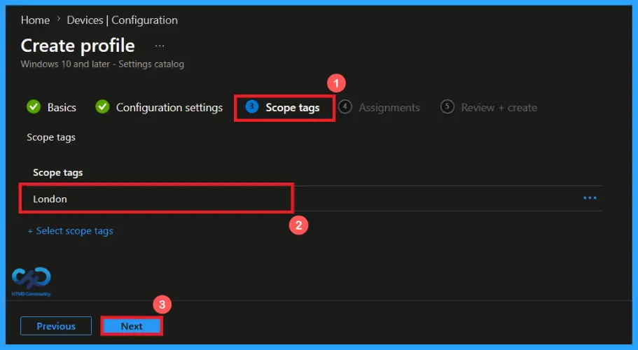
Add Groups using Assignment Tab
Use the assignment section to specify the users or devices that will receive the policy. Click Add Groups under included groups, then choose a group from the list. Here, I selected HTMD – Test Policy. Then click the Next button to continue.

Verify and Create the Policy
In the Review + Create step. We can review all configured settings for the policy profile. Use the previous option for making any necessary changes, click on create to complete the process. Then a notification will pop up and confirms that “Enable web sign-in for primary user” policy has been created successfully.
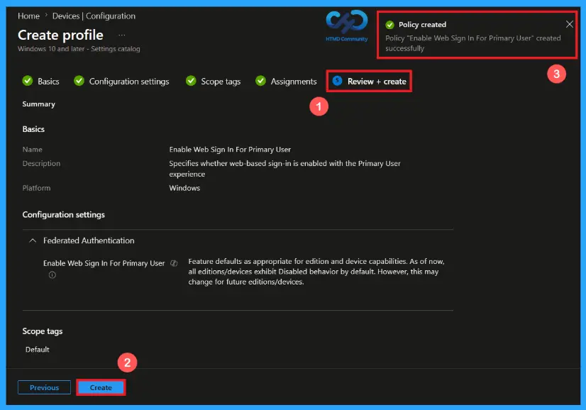
Device and User Check-in Status
Once the policy is deployed, you can monitor its status through the Intune admin center. Go to devices>Configuration. Open the Enable Web Sign In for Primary User policy and review the Device and User Check-in Status to verify whether the status has shown succeeded (1), performing a manual sync from the company portal can help device to receive and apply the policy more quickly.
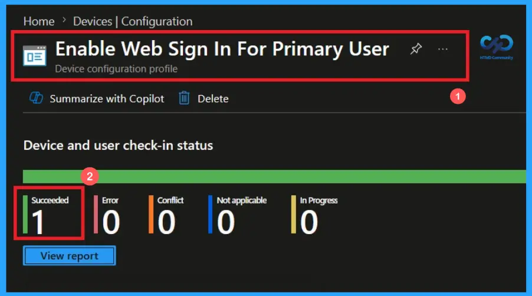
Client-side Verification of Enable Web Sign In for Primary User Policy
To confirm that the policy has been successfully applied on a client device, open Event viewer and navigate to Applications and services logs> Microsoft> Windows> Device management enterprise diagnostic provider> Admin. Use the filter current login option to locate Event Id 813.
MDM PolicyManager: Set policy int, Policy: (EnableWebSignInForPrimaryUser), Area:
(FederatedAuthentication), EnrollmentID requesting merge: (EB427D85-802F-46D9-A3E2-
D5B414587F63), Current User: (Device), Int: (0x0), Enrollment Type: (0x6), Scope: (0x0).
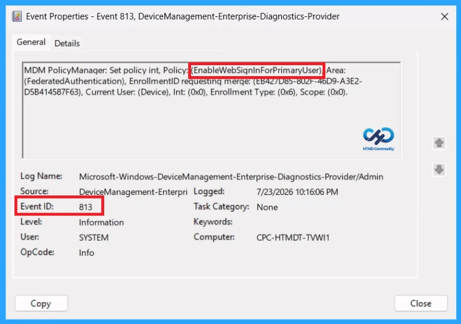
Configuration Service Provider (CSP)
The Configuration Service Provider (CSP) defines how windows configuration settings are managed through Microsoft Intune. Ensuring consistent policy deployment across Windows 10 and 11 devices. It explains what each policy does, what settings or values can be used, and how it connects to older Group Policy settings (Group Policy Mapping details).
Description framework properties: The following table shows the description framework properties of Enable Web Sign-in for Primary User policy.
| Property name | Property value |
|---|---|
| Format | int |
| Access Type | Add, Delete, Get, Replace |
| Default Value | 0 |
Allowed values: It defines the supported configuration options available for the Enable Web Sign in for Primary User policy.
- 0 (Default) – Feature defaults as appropriate for edition and device capabilities. As of now, all editions/devices exhibit Disabled behavior by default. However, this may change for future editions/devices.
- 1 – Enabled – Web Sign-in Credential Provider will be enabled for device sign-in.
- 2 – Disabled – Web Sign-in Credential Provider won’t be enabled for device sign-in.
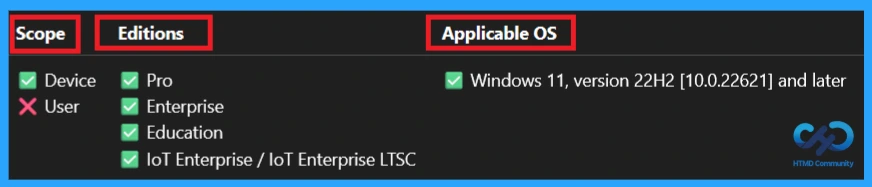
How to Remove the Assigned Group from Enable Web Sign in for Primary User policy
You can easily remove an assigned group from a policy, go to the devices>configuration and search for the Enable Web Sign in for Primary User policy. Click on the Edit button on the Assignment tab then click on Remove button on this section to remove the policy and click Review + Save after making the change.
For detailed information, you can refer to our previous post – Learn How to Delete or Remove App Assignment from Intune using by Step-by-Step Guide.
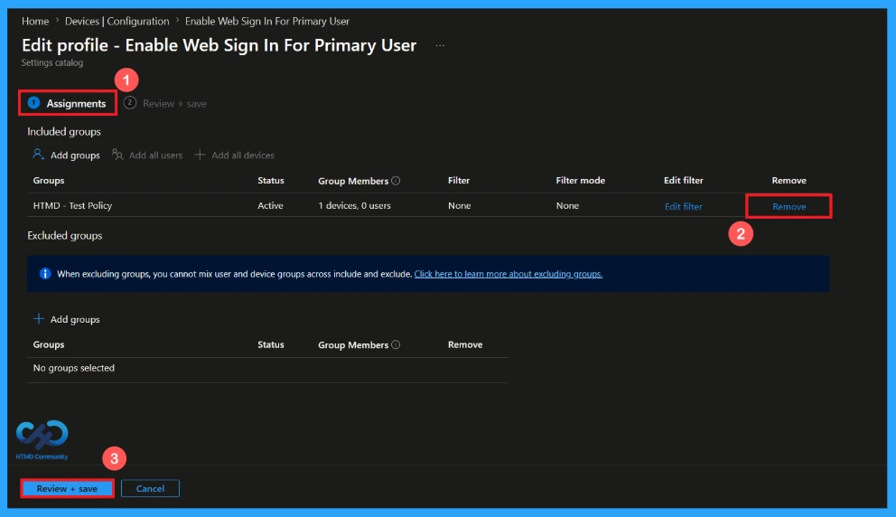
How to Delete the Enable Web Sign in for Primary User Policy from Intune Portal
If you want to delete this policy for any reason. Open the Microsoft Intune admin center and search for the Enable Web Sign in for Primary User Policy from configuration section. After finding the policy, click on the 3-dot menu next to it and tap the Delete option.
For detailed information, you can refer to our previous post – Learn How to Delete or Remove App Assignment from Intune using by Step-by-Step Guide.
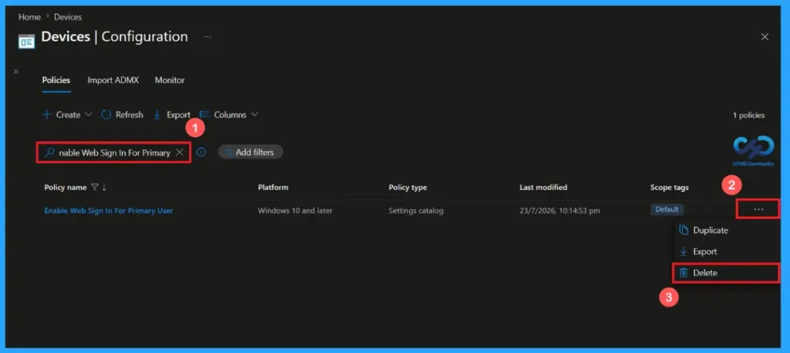
Need Further Assistance or Have Technical Questions?
Join the LinkedIn Page and Telegram group to get the latest step-by-step guides and news updates. Join our Meetup Page to participate in User group meetings. Also, Join the WhatsApp Community and WhatsApp Channel to get the latest news on Microsoft Technologies. We are there on Reddit as well.
Author
Anoop C Nair is Workplace Technology solution architect with 25+ years of experience in global enterprise organizations such as JP Morgan, Capgemini, etc. He is Microsoft Certified Trainer. Microsoft MVP from 2015 onwards for consecutive 11 years! He also conducts Intune and modern workplace tech training for enterprise organizations. He is Blogger, Speaker, and Founder of HTMD Community and HTMD Conference. His focus is on Device Management technologies such as Intune, Windows, Cloud PC. He writes about technologies like Intune, SCCM, Windows, Cloud PC, Windows, Entra, Microsoft Security.